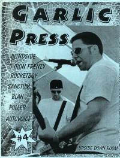

CMnexus
:
Contemporary Christian culture, music, and media.
Magazines
Profiles
Dove Awards
cmnexus.org
CM
nexus
→
Profiles
→
U
Upside Down Room
On the cover

Fall 1996
Garlic Press
Media coverage
Dec 1995 in
HM
"Fresh Produce", by
Andrew Crump
Fall 1996 in
Garlic Press
"Upside Down Room"
Albums & reviews:
1995:
Upside Down Room
Dec 1995 in
HM
, by
Brian Vincent McGovern
Spr 1996 in
Garlic Press
May 1997 in
HM
, by
Brian Vincent McGovern
1997:
Shake, Rattle & Rock
Fall 1997 in
Garlic Press
1997:
Drag, Baby, Drag
Sum 1997 in
Garlic Press
Sep 1997 in
YouthWorker
, by
Tony B. Jacobs
2010:
TV Baby [reissue]
Jan 2011 in
Down The Line
, by
Matt Crosslin
2011:
Let's Go For A Ride
May 2011 in
Down The Line
, by
Matt Crosslin
Jul 2011 in
HM
, by
Dan MacIntosh
Books about Upside Down Room
"
Upside Down Room
" in
The Encyclopedia of Contemporary Christian Music
(
Mark Allan Powell
,
2002
).
CMnexus
(noun)
The magazine index
of modern music
and Christianity
© 2011 CMnexus. Last updated August 2025.
Contact:
Rants and other correspondence to:
editor -AT- cmnexus
-DØT- org
About